Креслення КМД і збірних фундаментів ФМ1-З
СЕС-навіс з УЗЕ, сел. Гостомель, вул. Свято-Покровська, 81Б · РП 36/26 · 12 аркушів А3 · метал нетто 13,07 т (КБ — 13,18 т)
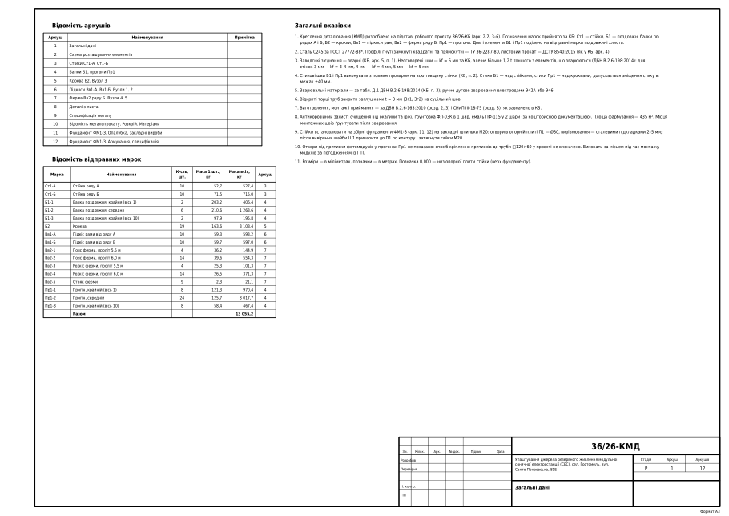
Арк. 1Загальні дані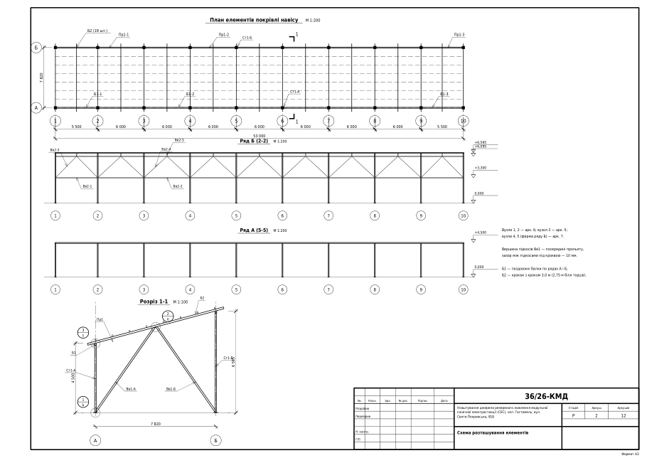
Арк. 2Схема розташування елементів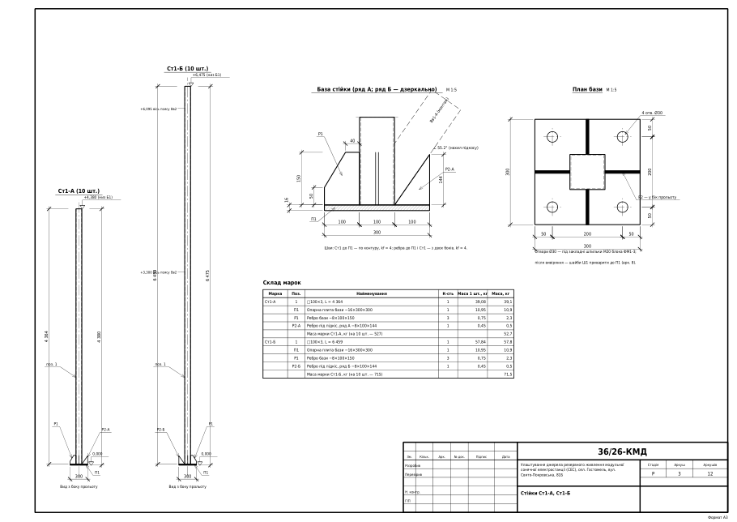
Арк. 3Стійки Ст1-А, Ст1-Б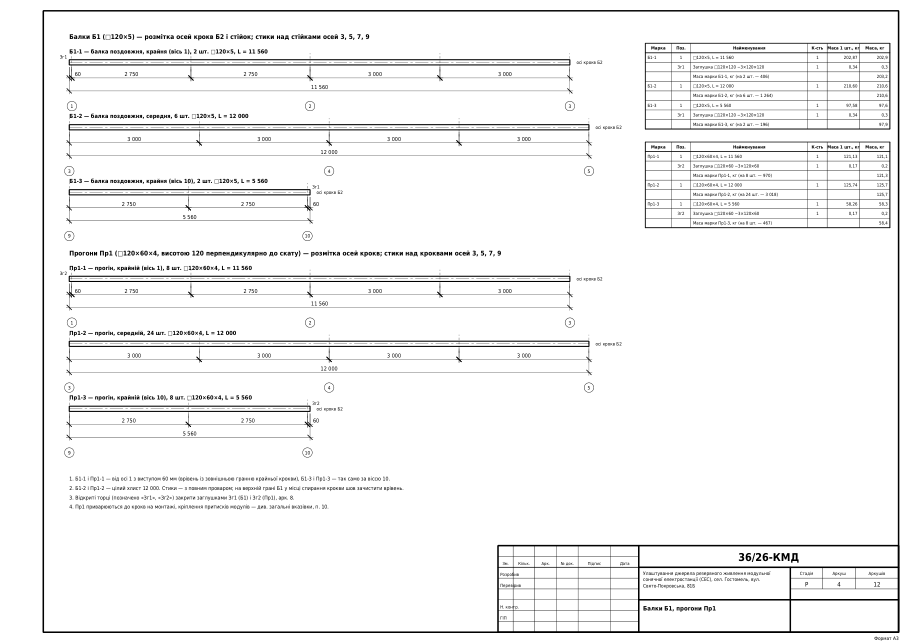
Арк. 4Балки Б1, прогони Пр1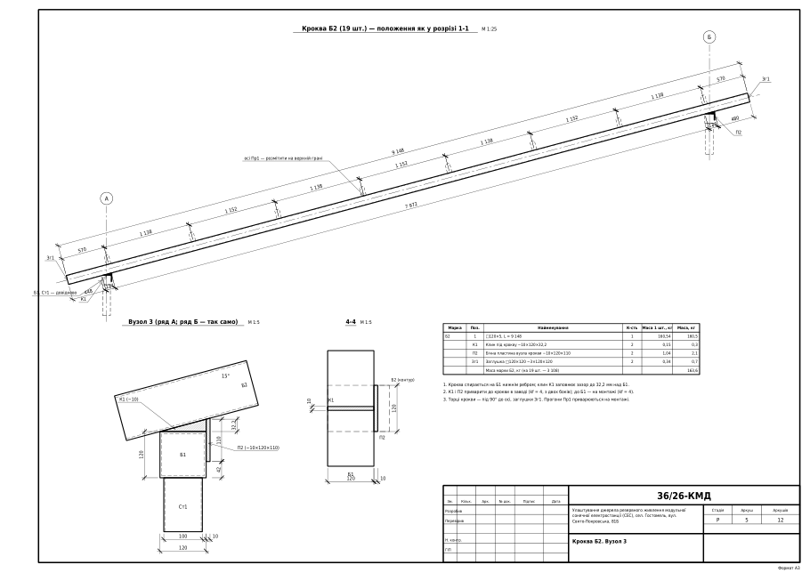
Арк. 5Кроква Б2. Вузол 3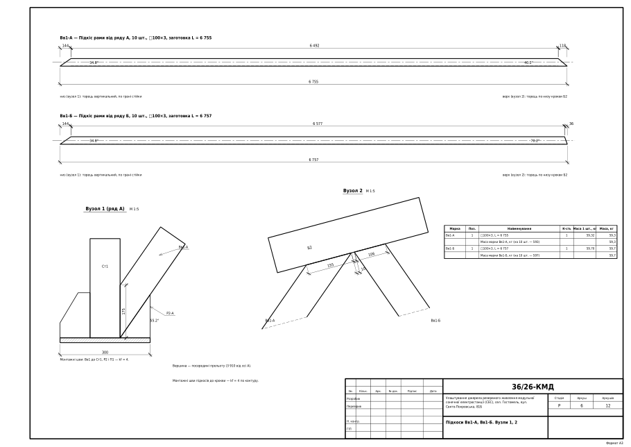
Арк. 6Підкоси Вв1-А, Вв1-Б. Вузли 1, 2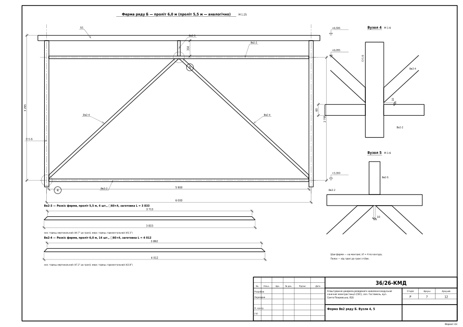
Арк. 7Ферма Вв2 ряду Б. Вузли 4, 5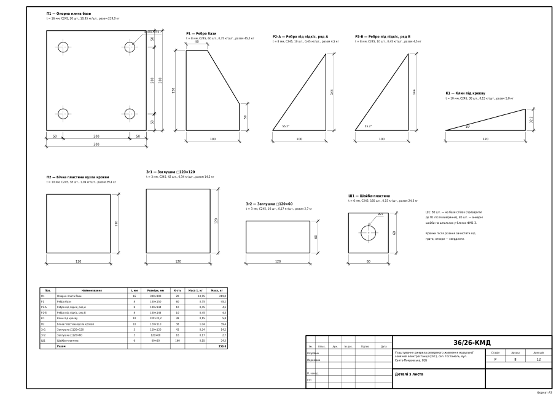
Арк. 8Деталі з листа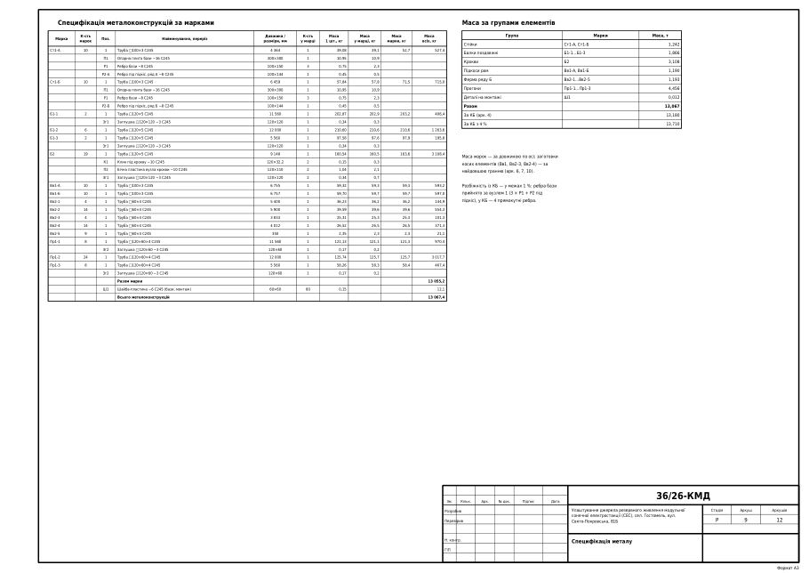
Арк. 9Специфікація металу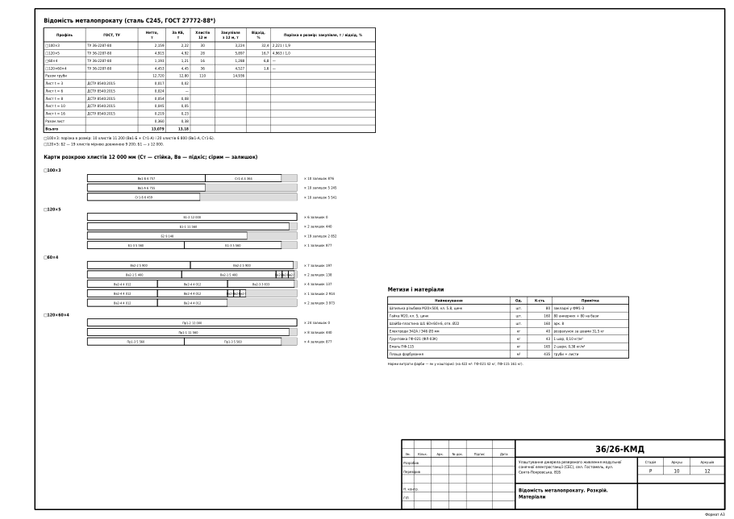
Арк. 10Відомість металопрокату. Розкрій. Матеріали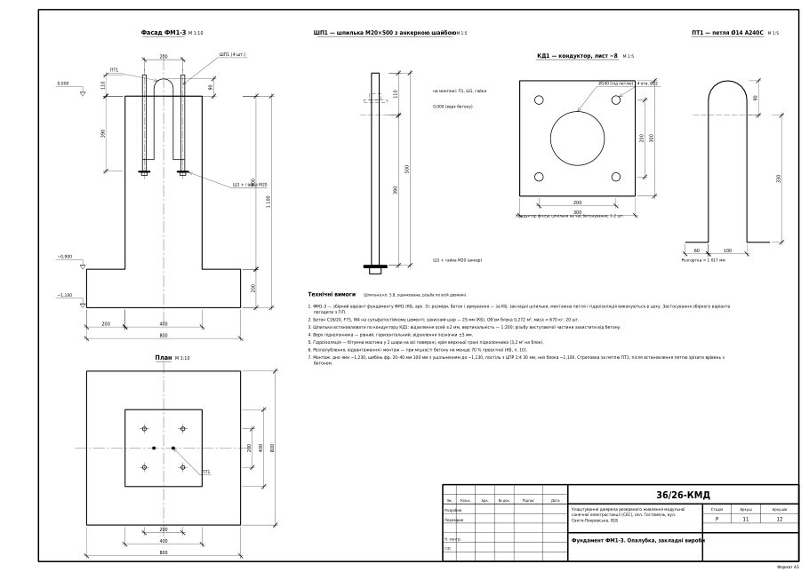
Арк. 11Фундамент ФМ1-З. Опалубка, закладні вироби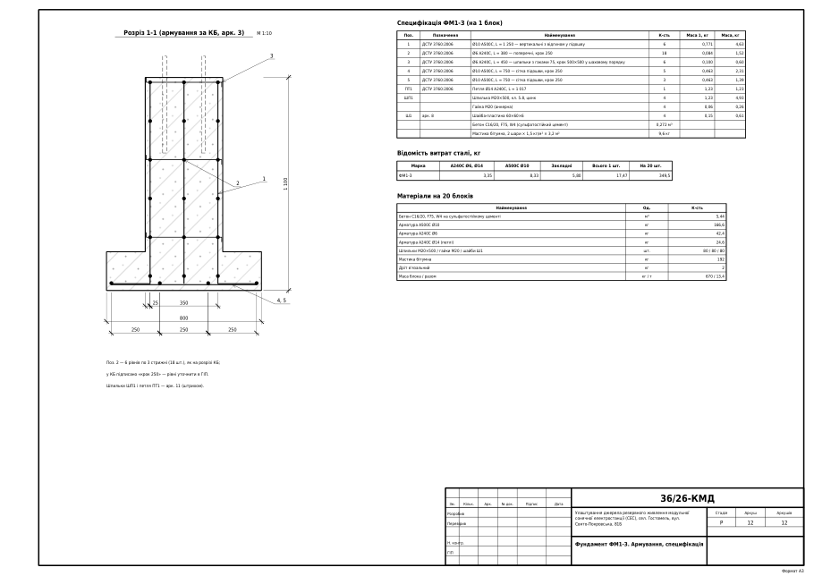
Арк. 12Фундамент ФМ1-З. Армування, специфікація- Позначення марок — за КБ: Б1 — поздовжні балки по рядах А і Б, Б2 — крокви, Пр1 — прогони, Вв1 — підкоси рам, Вв2 — ферма ряду Б.
- Фундаменти — збірний варіант ФМ1-З (розміри, бетон і армування за КБ арк. 3, закладні шпильки М20 і петля — у цеху).